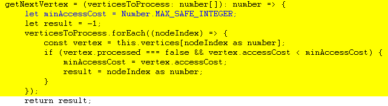
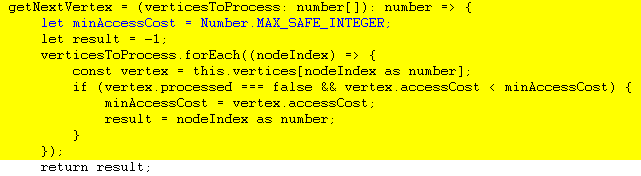

Взвешенный неориенти- рованный граф.
Интерпретация веса зависит от области
Александр Пономаренко
ГК Иннотех, Frontend-разработчик React.
В web-разработке 20 лет, фронтенд - 4 года. Гос. web-проекты, телеком, финтех. Опыт создания обучающих игр на JS

Telegram: https://t.me/brain16383

Игра «Lode runner»
для ZX Spectrum
Broderbund 1984
 

getNext Vertex()
Александр Пономаренко
Telegram: https://t.me/brain16383